Most recent recipes
Beef & vegetable roti parcels
1 hr 30 mins
Serves 14
Tuna kokoro bowl
35 mins
Serves 2
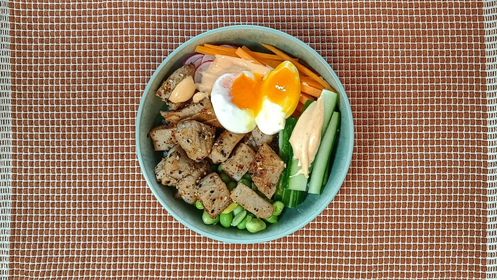
Prawn curry
50 mins
Serves 4
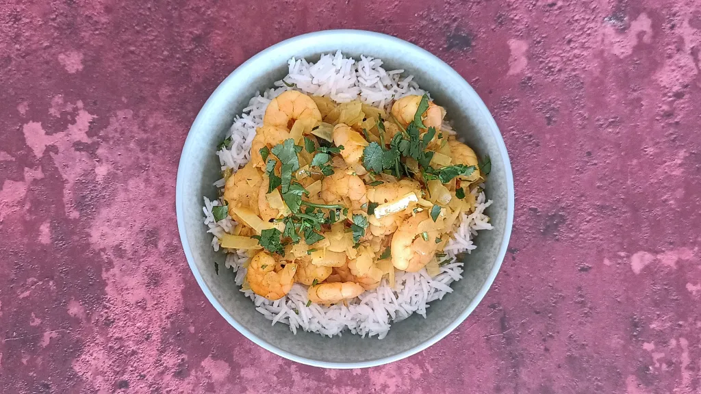
Beef and yellow split pea stew with crispy potatoes
2 hr 20 mins
Serves 4
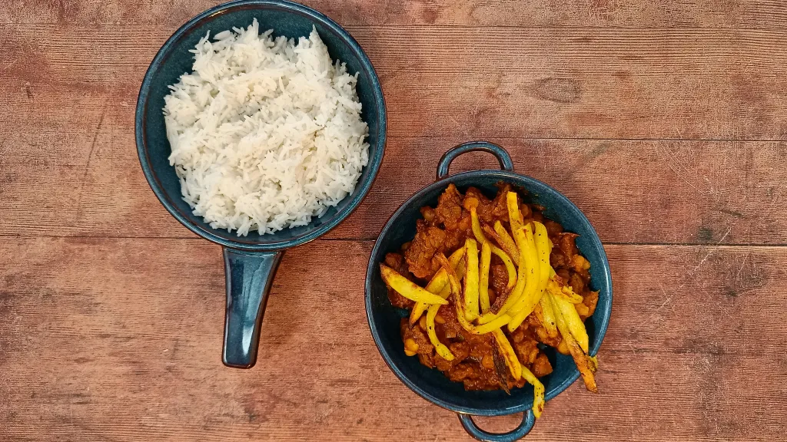
Soy & mirin tuna on soba noodles
30 mins
Serves 4
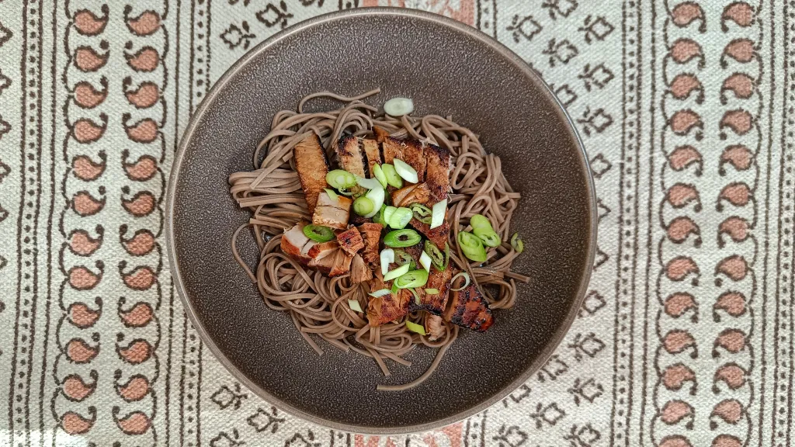
Harissa chicken, tomato and olive pasties
2 hr 35 mins
Serves 4
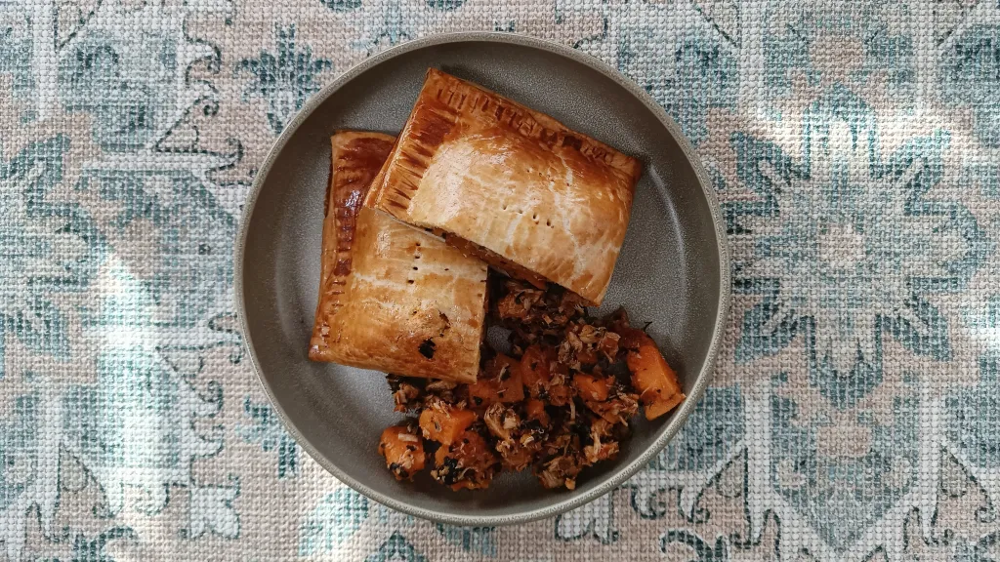
Pork katsu curry
55 mins
Serves 4
Lamb tagine pasties
2 hr 45 mins
Serves 4
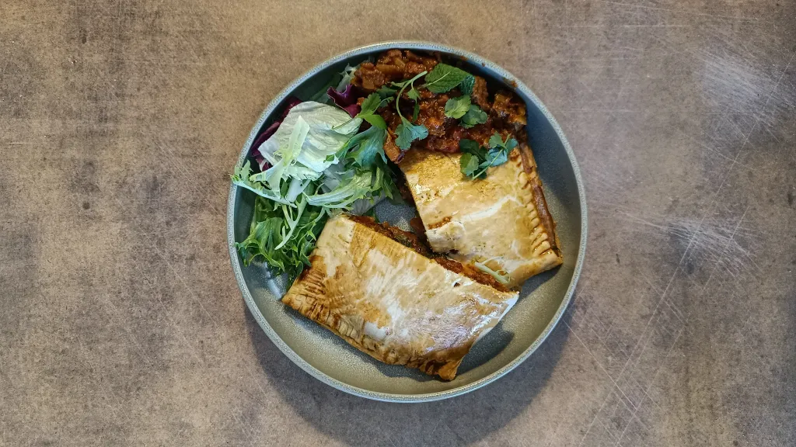
Yogurtlu kebap with hot spiced butter
50 mins
Serves 4
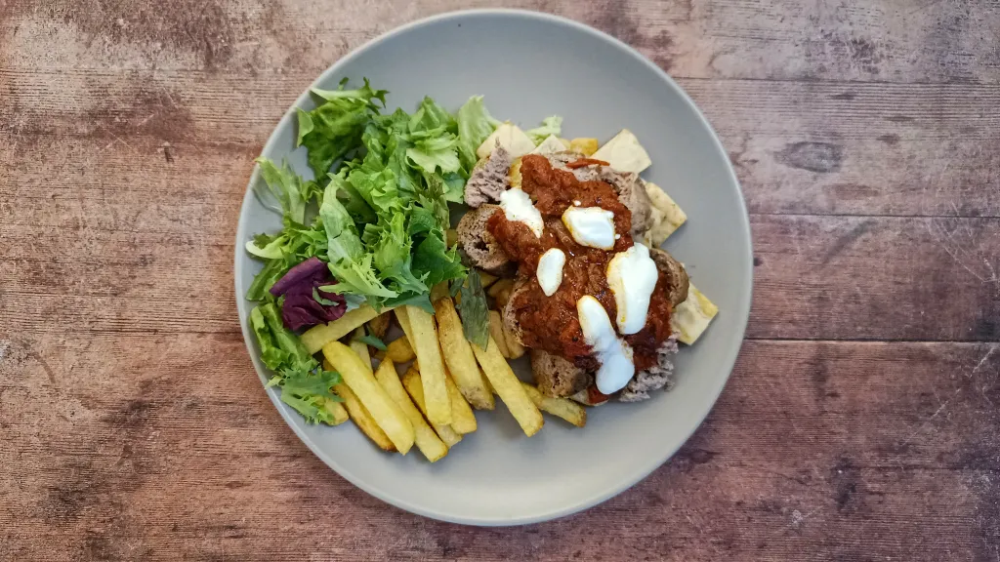
Mongolian beef
45 mins
Serves 4
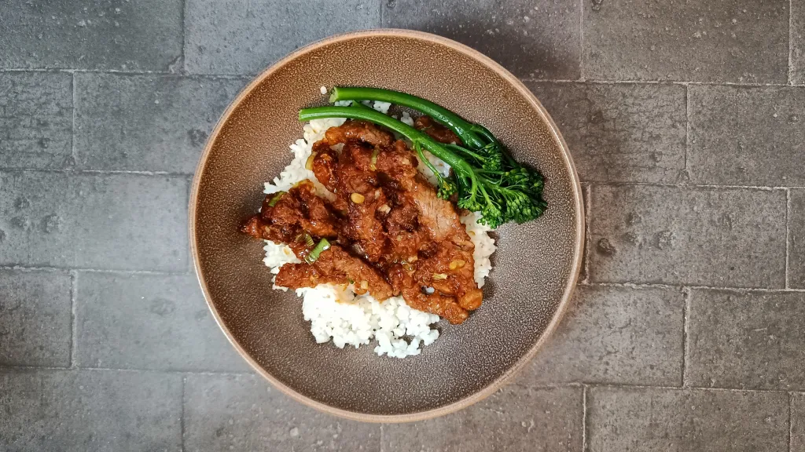
Bengali fish curry
35 mins
Serves 4
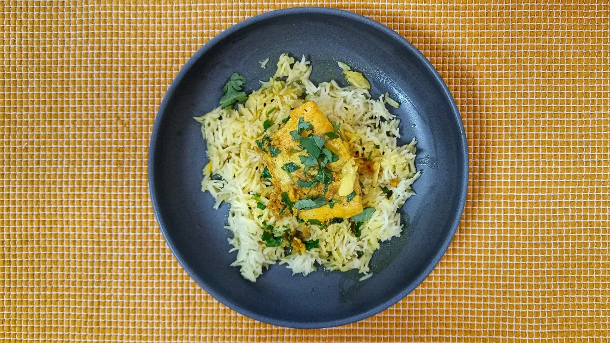
Boston beans
45 mins
Serves 4-6
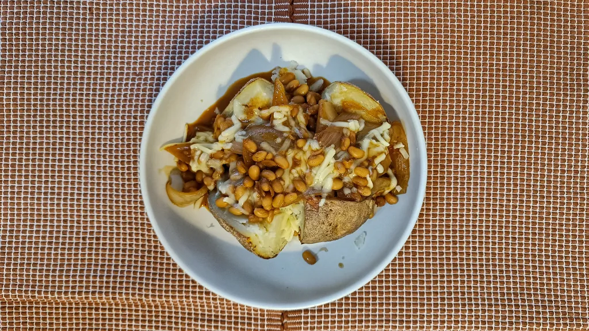
Reshmi kebabs with green chutney
45 mins
Serves 4
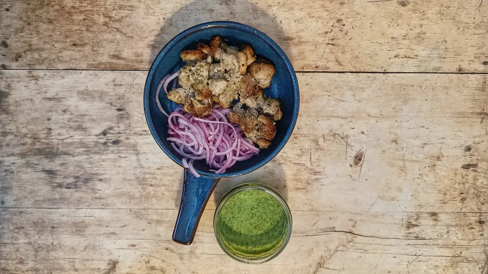
Amish’s gujarati vegetable curry
50 mins
Serves 4
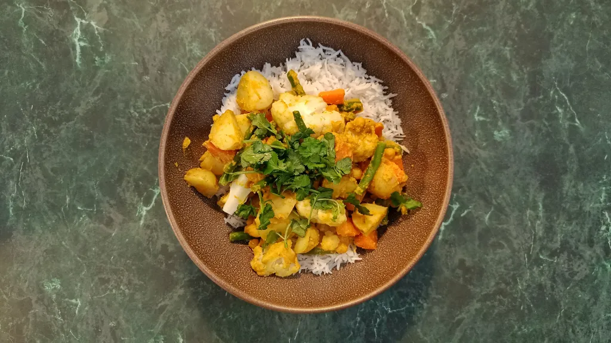
Veal parmigiana
37 mins
Serves 4
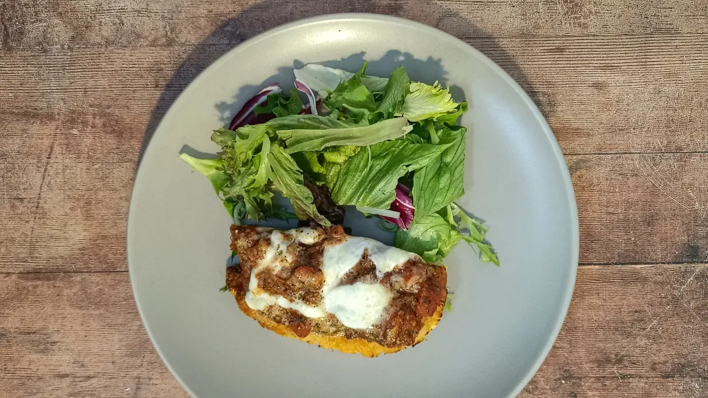